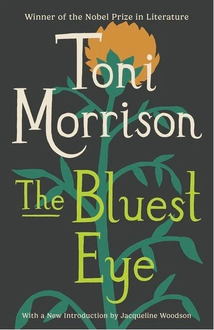
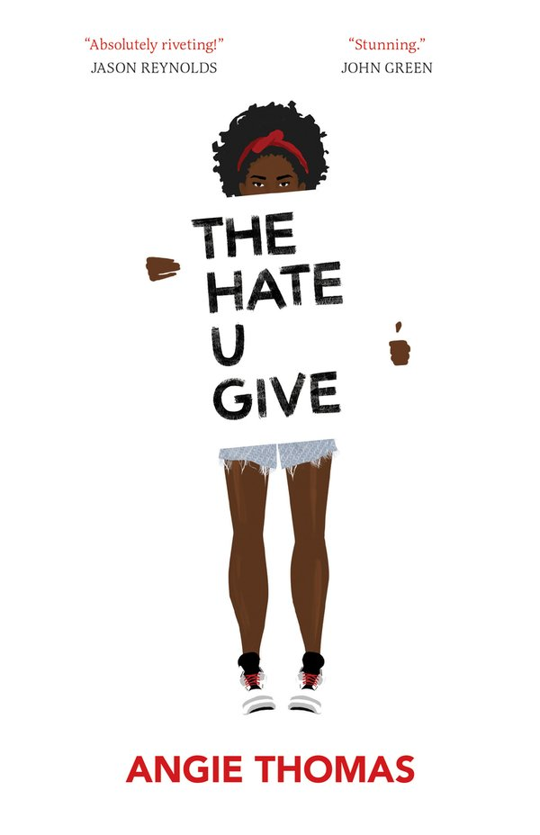
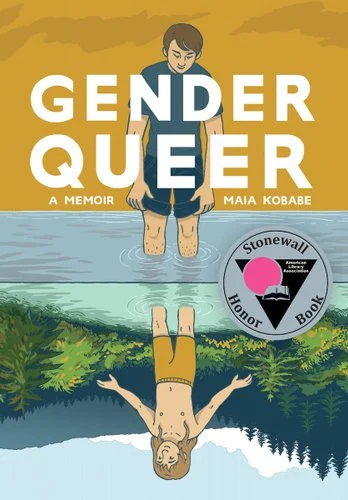
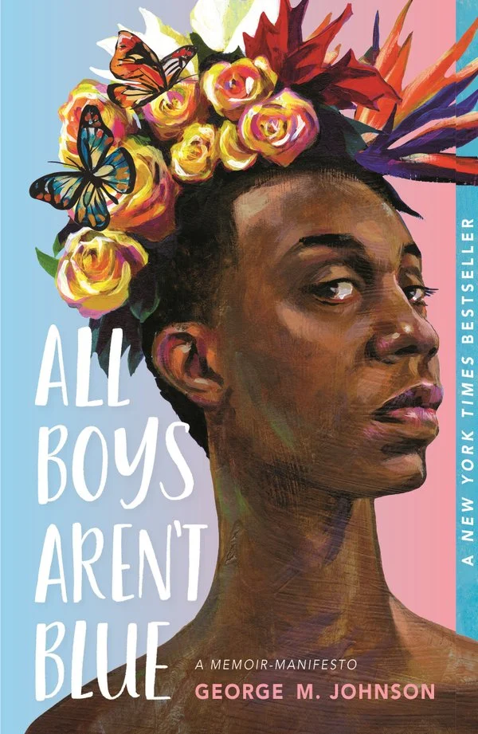
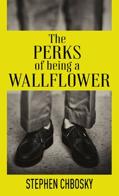
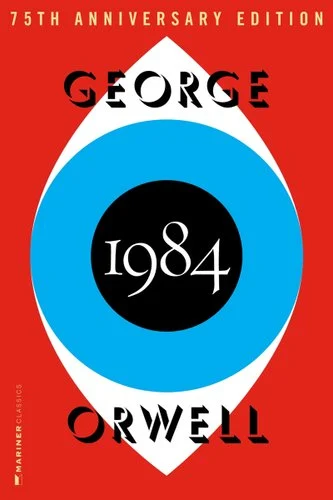

The Bluest Eye
A novel about race, identity, childhood, and beauty standards.
Language and difficult subject matter
Freedom to Read
Explore frequently challenged books.
Banned Books Week draws attention to censorship and celebrates the freedom to read. It brings together readers, educators, librarians, booksellers, publishers, and writers in support of open access to information and ideas.
A challenge is an attempt to remove or restrict access to a book. A ban occurs when that material is removed. Books may be challenged because of their language, subject matter, viewpoints, or representation of particular identities and experiences.

A novel about race, identity, childhood, and beauty standards.
Language and difficult subject matter
A graphic memoir about a family's experiences during the Holocaust.
Language and difficult subject matter

A novel examining racism, activism, identity, and community.
Language and social themes

A graphic memoir exploring gender identity, sexuality, and self-discovery.
Sexual content and LGBTQIA+ themes

A collection of personal essays about identity, family, and growing up.
Sexual content and LGBTQIA+ themes

A coming-of-age novel about friendship, trauma, and finding a place to belong.
Sexual content, language, and substance use
A coming-of-age novel exploring friendship, grief, choices, and responsibility.
Sexual content, language, and substance use

A dystopian novel examining surveillance, censorship, propaganda, and authoritarian power.
Political themes, sexual content, and violence
A dystopian novel about censorship, conformity, mass media, and the destruction of books.
Language, violence, and political themes